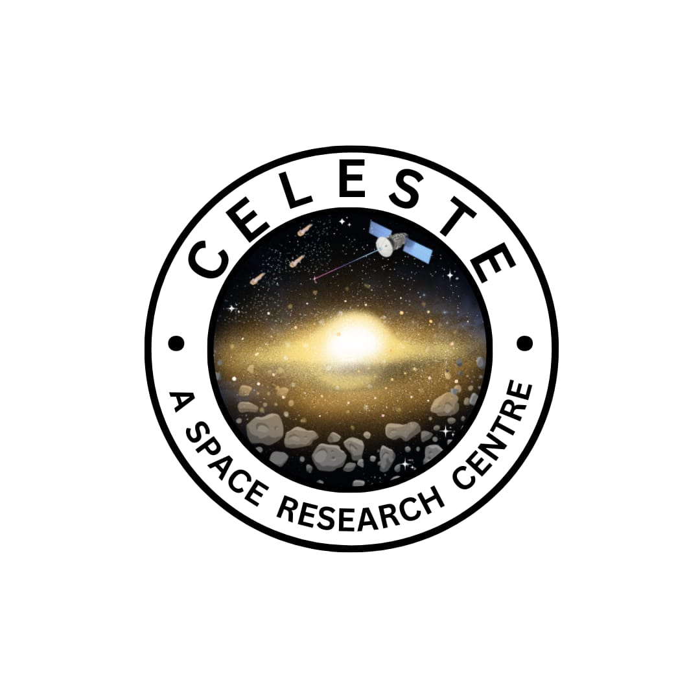

Affiliations

Skills
- Python for Machine Learning, Data Science, Geospatial Analysis, and Statistics
- Multiprocessing and basic web development
- VMD, NAMD, and Qiskit
Achievements
- Recipient of the Best Student Award from the CSE Department at GNITS, awarded through CSI GNITS, for the academic year 2020-2024
- Qualified GATE-CS 2024 (First Attempt)
- NASA Open Science Certified
- 3rd prize at IIT Madras Shaastra Biotech Innovation Challenge, 2024
- First runner-up in the Smartest and Impactful AI Solutions Challenge by Smart Tech LLC
- Second runner-up in the Shaastra Biotech Innovation Challenge 2024 by IIT Madras
- Top-5 in ThinkPad-Idea Pitching at AISYWLC-2021
- Founder President of Celeste: A Space Research Center at GNITS, Hyderabad

Projects
-
Neural Network Approach for prediction and analysis of solar storms from DSCOVR data
This was the academic mini project. We identified the need for precise prediction of solar winds to eliminate significant threats to modern power systems, transmission lines, and electronic infrastructure. We developed a system to enhance solar storm prediction by addressing computational limits and improving accuracy. We utilized Gated Recurrent Units (GRU) with Regression to predict the intensity and timing of solar storms based on magnetic flux data. Key measures include the KP-Index, which assesses solar activity on Earth over the next 48 hours using magnetometer data, providing region-specific impact predictions, and the Disturbance Storm Time (DST), which provides potential warnings of massive storms 50 minutes in advance by tracking sudden flux changes. Data from NASA's DSCOVR Space Weather Station, orbiting at the Sun-Earth L1 Lagrange Point, was used for magnetic field index (MFI), solar proton density, and solar wind speed measurements. Our approach enabled GRU to capture complex patterns from DSCOVR data, and Regression to track intensity changes, ensuring timely and accurate predictions. This integrated method facilitated accurate 1-hour DST scaling and 48-hour solar storm duration forecasts, ensuring timely and specific solar activity warnings. This combination of GRU and Regression, grounded in physical laws, created a semi-supervised Reinforcement Learning model that was efficient, scalable, and adaptable for cloud platforms.
GitHub Repo -
Points of Interest Matching
Involves matching of similar Geographical Points of Interest(POIs) employing KD Trees on the dataset with million entries. When you look for nearby restaurants or plan an errand in an unknown area, you expect relevant, accurate information. To maintain quality data worldwide is a challenge, and one with implications beyond navigation. Businesses make decisions on new sites for market expansion, analyze the competitive landscape, and show relevant ads informed by location data. For these, and many other uses, reliable data is critical. Large-scale datasets on commercial points-of-interest (POI) can be rich with real-world information. To maintain the highest level of accuracy, the data must be matched and de-duplicated with timely updates from multiple sources. De-duplication involves many challenges, as the raw data can contain noise, unstructured information, and incomplete or inaccurate attributes. A combination of machine-learning algorithms and rigorous human validation methods are optimal to de-dupe datasets. With 12+ years of experience perfecting such methods, Foursquare is the #1 independent provider of global POI data. The leading independent location technology and data cloud platform, Foursquare is dedicated to building meaningful bridges between digital spaces and physical places. Trusted by leading enterprises like Apple, Microsoft, Samsung, and Uber, Foursquare’s tech stack harnesses the power of places and movement to improve customer experiences and drive better business outcomes. I applied these principles to the project involving large-scale datasets on commercial POI de-duplication, achieving an accuracy of 69.8%. This project showcases my ability to handle complex datasets and implement machine learning solutions to enhance data quality.
Kaggle Notebook
Quora Interests
I actively share my knowledge and insights on Quora, where I have written 124 answers across topics such as Statistics, Research, Machine Learning, Neural Networks, Math, Physics, Chemistry, and Nanotechnology. My space, "Dose of new Engineering Ideas," focuses on summarizing research papers with practical implications and exploring cutting-edge technologies.
Quora Profile